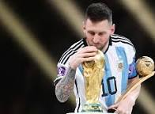
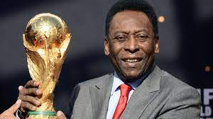
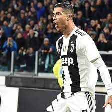

Daremos una breve lista de los mejores deportistas a
nivel mundial

Lionel Andrés Messi Cuccittini
LOS 43 TÍTULOS DE LIONEL MESSI
34 en el Barcelona: 10 Ligas de España,
7 Supercopas de España,
7 Copas del Rey, 4 Champions League,
3 Mundiales de Clubes y 3 Supercopas de Europa.
5 en Argentina: Mundial Sub 20 del 2005, los Juegos Olímpicos 2008 en Pekín, Copa América 2021,
Finalissima 2022 y la Copa del Mundo 2022.

Edson Arantes do Nascimento (Pele) QEPD
EL LEGADO DE PELÉ
3 Copas del Mundo.
2 Copas Libertadores.
2 Copas Intercontinentales.
1 Supercopa de Campeones Intercontinental.
6 Brasileiraos.
1 Liga Nacional de Estados Unidos.
10 Campeonatos Paulistas.
4 Campeonatos Río - Sao Pau.

Cristiano Ronaldo dos Santos Aveiro
En total, Ronaldo ya suma 35 estrellas a nivel de clubes y selección,
pues ha conquistado 5 Champions League, 1 Eurocopa, 2 Liga de España,
2 Serie A de Italia, 3 Premier League, 1 UEFA Nations League, 2 Copa del Rey,
1 FA Cup / Copa de Inglaterra, 3 Supercopa de Europa, 2 Community Shield / Supercopa de Inglaterra,
2 Supercopa de España, 2 Supercopa de Italia, 1 Supercopa de Portugal, 4 Mundial de clubes,
2 Copa de la Liga de Inglaterra,
1 Coppa Italia y 1 Campeonato de Clubes Árabes.